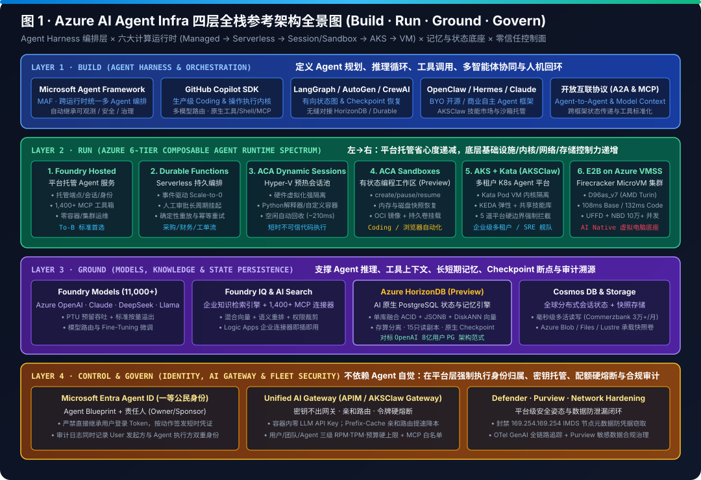

在 Azure 上构建、运行与扩展生产级 AI Agent 基础设施
融合四层全栈参考架构（Build · Run · Ground · Govern）、六大计算运行时光谱（Foundry Hosted → Durable Functions → ACA Dynamic Sessions → ACA Sandboxes → AKS Kata / AKSClaw → E2B on VMSS D96as_v7）、状态持久化三剑客（HorizonDB · Cosmos DB · UFFD/NBD 快照）与现场五步落地法。
一、四层全栈参考架构交互解构（点击任一层级查看深度机制与防坑指南）
二、高清矢量架构图与工作流图谱（8 张自包含 SVG 图集）

三、Azure 六大 Agent Runtime 深度选型对比表
| 评估维度 | 1. Foundry Hosted Agents | 2. Durable Functions | 3. ACA Dynamic Sessions | 4. ACA Sandboxes (Preview) | 5. AKS + Kata (`AKSClaw`) | 6. E2B on VMSS (`D96as_v7`) |
|---|---|---|---|---|---|---|
| 隔离边界 | 托管服务级边界 | Serverless Worker | Hyper-V 硬件虚拟化 | 隔离容器 + 端口/网络策略 | Kata Pod VM 独立内核 | KVM + Firecracker + ns-N |
| 不可信代码执行 | 不支持 (仅受控工具) | 不支持 (控制流编排) | 原生支持 (Python/容器) | 原生支持 (完整 OCI + Shell) | 原生支持 (Pod VM CLI/脚本) | 原生支持 (完整 OS + GUI 桌面) |
| 状态与快照机制 | 托管线程 / Cosmos DB | Durable 检查点自动重放 | 空闲回收即清零 (需外置 DB) | 内存/磁盘快照 + 持久卷 | 共享只读技能 PV + 独占状态 PV | UFFD 内存按需缺页 + NBD 差分块 |
| 实测/典型恢复延迟 | ~180–850 ms | ~95 ms 热唤醒 | ~210 ms (预热池分配) | ~320 ms (快照恢复) | ~160–1400 ms | 108 ms Base / 132 ms CI V1 |
| 典型黄金场景 | To-B 标准企业 API 助手 | 采购/财务跨天人工审批流 | 短平快代码解释器/文件解析 | Coding Agent / 浏览器工作台 | 多租户研发/SRE 舰队平台 | 10万+ 并发云端虚拟电脑 (Manus) |
四、Playbook 四维技术底座与商机成熟度交互自测器（脱敏方法论）
五、E2B 深度研究：四阶段演进范式、BYOC 架构与 E2B on Azure 六大生产最佳实践
| 演进阶段 / 部署模式 | 核心定位与控制面归属 | 关键架构组件与边界 | 生产实测指标与典型场景 |
|---|---|---|---|
| Wave 1 → Wave 4 演进 Sandboxes are dead |
从 2024 短代码片段 (Wave 1)、2025 全栈应用容器/K8s (Wave 2)、2026 运行整台电脑 (Wave 3) 迈向 Agent-Driven Private Cloud (Wave 4) | 专用持久存储 · 出向防火墙 · 跨沙箱内网 · 可观测性 · CPU/RAM 在线热扩缩 · 无头浏览器 · 凭据保险箱 | 基于 20 亿+ 次运行与数百亿条轨迹，在任务启动前预测所需工具、时长、CPU/RAM 与网络白名单并实时组装私有云 |
| E2B BYOC (Enterprise) Azure Subscription / VNet |
部署在客户自有 Azure Subscription (VNet)、AWS 或 GCP；E2B Cloud 仅接收 TLS 匿名 CPU/内存指标 | ① Orchestrator · ② Edge Controller · ③ Monitoring · ④ Storage | 模板、内存快照、运行日志与沙箱流量 100% 不出客户 Azure VNet；满足金融与医疗 SOC 2 / HIPAA 强合规 |
| E2B Cloud vs. E2B Embed SaaS vs. Apache-2.0 |
E2B Cloud 运行于 E2B 官方 GCP 账户；E2B Embed 为 Apache-2.0 单 Linux 宿主机开源包 |
Cloud 提供零运维多租户 SaaS；Embed 适配单台 KVM 裸机、云 VM 或 K8s Node | 按合规等级平滑切换：原型期用 E2B Cloud，单机实验用 Embed，大规模生产上 Azure BYOC / VMSS |
零凭据 Terraform 交付与 ILB 私网互联
规划独立 Azure Subscription，本地执行 E2B Terraform 模块（需订阅 Owner + Entra ID Cloud Application Administrator，全程零密钥交换）。提前申请目标区域 Standard_D96as_v7 (108ms/132ms) vCPU 配额；通过 Azure Internal Load Balancer (ILB) + Private Link Service / Private Endpoint（或 VNet Peering）与 APIM 动态 Host 网关私网直连。
消除 yamux 静默断连引发的 35% 误杀风暴
非 Leader Nomad Server 静默宕机时，yamux@v0.1.2 需 10s–40s 探知断连，慢于默认 20–30s 心跳超时，导致 7/20 (35%) 健康节点被误杀、剩余节点负载激增 +53.85%。必须双层加固：(1) Job Group 配置 lost_after="50s", replace=false, reconcile="keep_original"（0 替换、10/10 沙箱与 23/23 NDJSON 流完好）；(2) Server 配置 heartbeat_grace="50s"（20/20 节点 100% ready）。
10x–20x 上下文卸载与 9 a.m. 潮汐预热
借鉴 ClickUp（服务 85% 财富 500 强，SOC 2 & HIPAA）：将大表格与录像直接上传沙箱由代码解析，仅回传结果实现 10x–20x 等效上下文扩容；预烘焙含 68 个工具的黄金模板 + 6 大职能模板；结合 定时预热池 + 60% CPU 扩容 + 15–30 分钟 Pause/Resume (`UFFD+NBD`) + HorizonDB 检查点 应对早 9 点每分钟数千沙箱洪峰。